Resultados Unal
Análisis de resultados UNAL
Resultados por área
Vemos que el área a la que le fue mejor en este primer simulacro fue análisis de imagen y la que le fue mal es matemáticas.
Resultado global
Vemos que la mediana esta por encima del promedio estandarizado, es decir que el grupo esta por encima del promedio.
Estado de Admisión
En este semestre fueron admitidos el \(12 \%\) entre mochuelxs y monitorxs de 42.
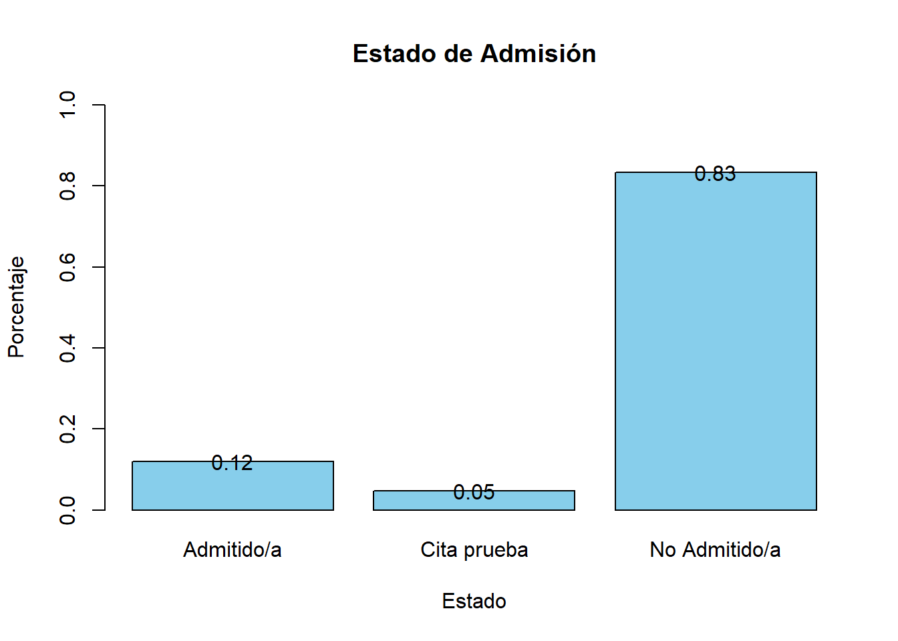
Comparación por áreas respecto a los resultados UNAL
Textual
Textual esta por encima del promedio estandarizado, es decir que su rendimiento fue bueno.
Matemáticas
Matemáticas no hubo mejora considerable.
Ciencias Naturales
Ciencias Naturales esta por encima del promedio estandarizado, es decir que su rendimiento fue bueno.
Análisis de Imagen
Análisis de imagen esta por encima del promedio estandarizado, es decir que su rendimiento fue bueno.
Comparación de puntajes globales
En general vemos que los puntajes mejoraron en comparación con los dos simulacros, es decir que en el examen Unal a los mochuelxs les fue mejor.
Rendimiento del mochuelx respecto al examen UNAL
Se presenta la comparación individual de cada mochuelx en las diferentes áreas y su puntaje global con sus resultados en la prueba UNAL.
Puntaje global
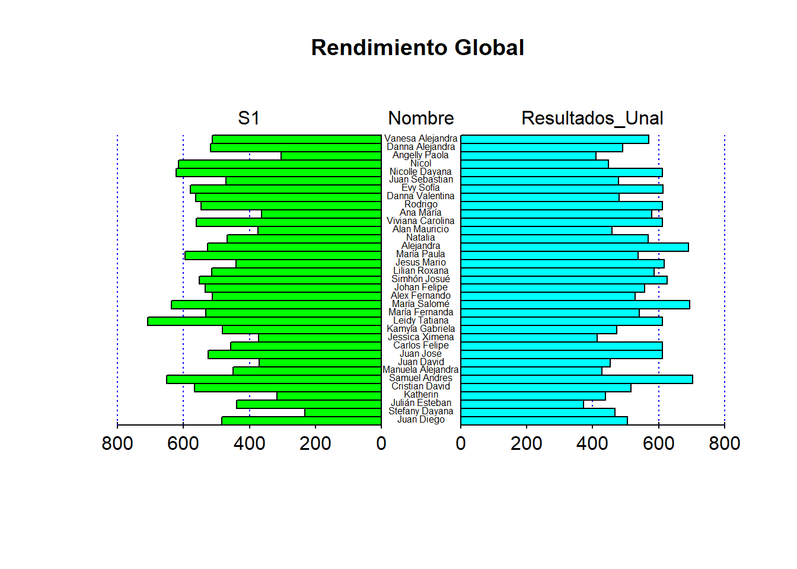
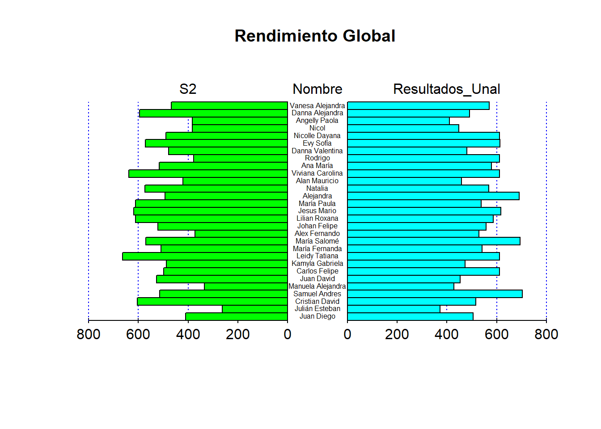
Textual
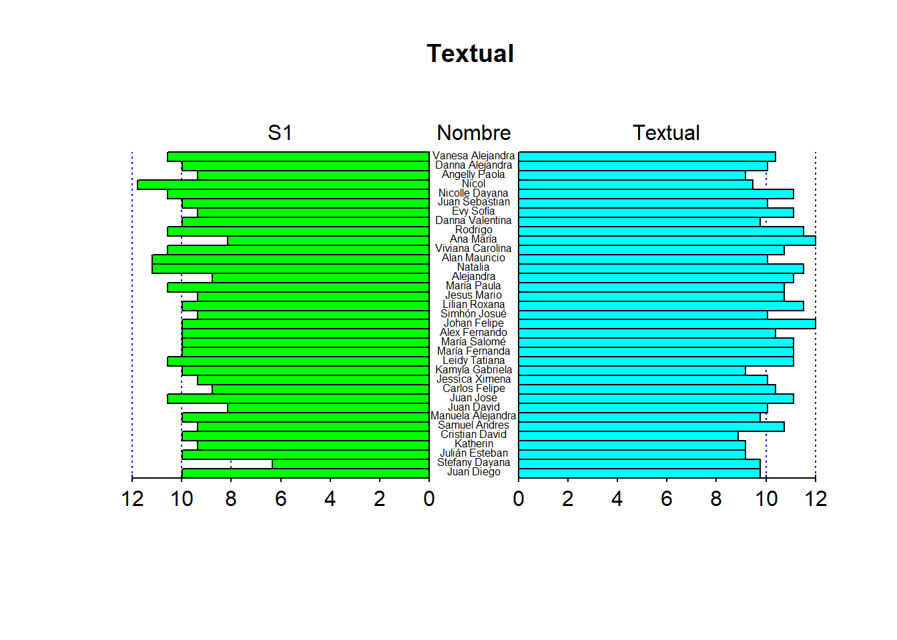
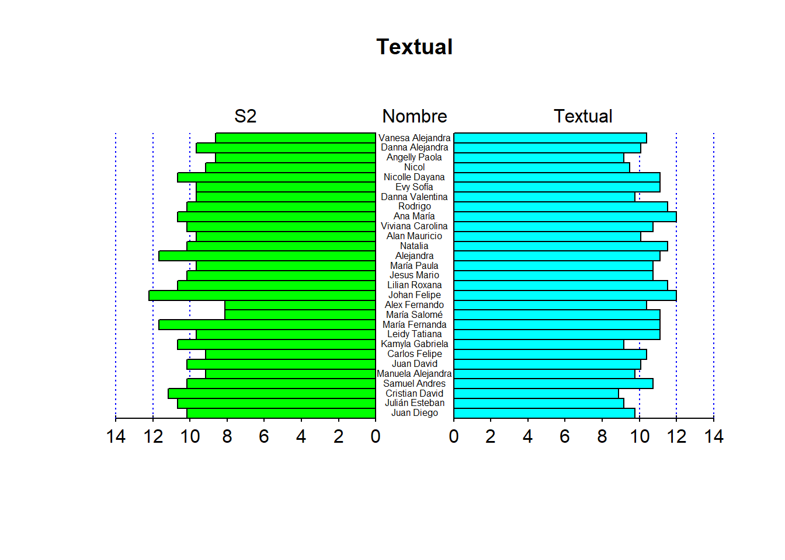
Matemáticas
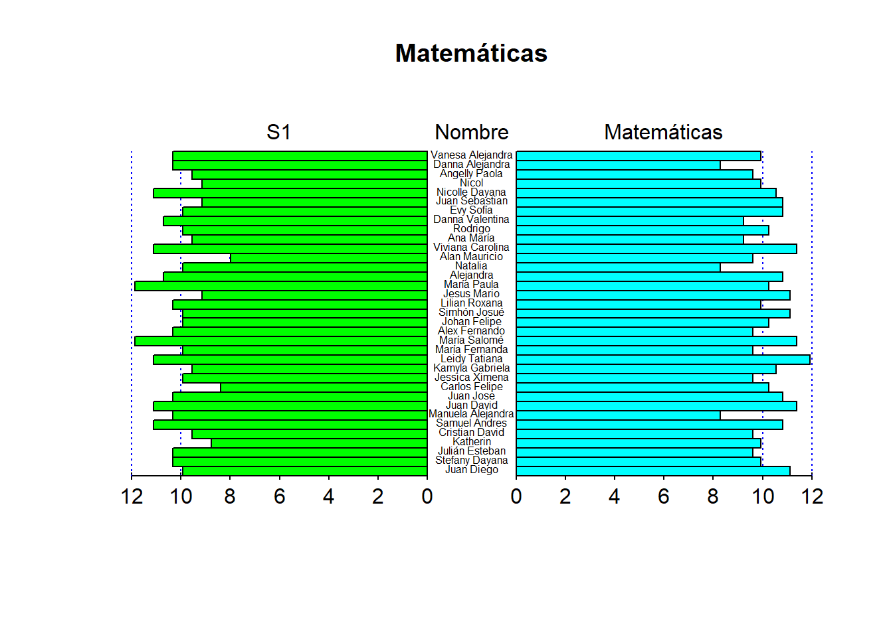
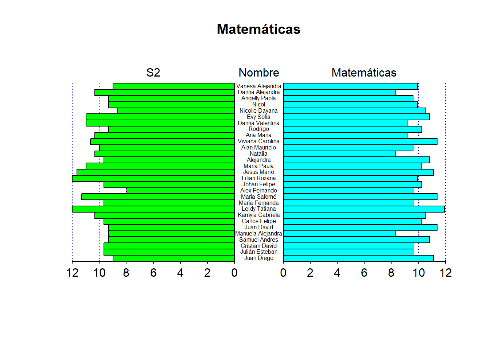
Ciencias Naturales
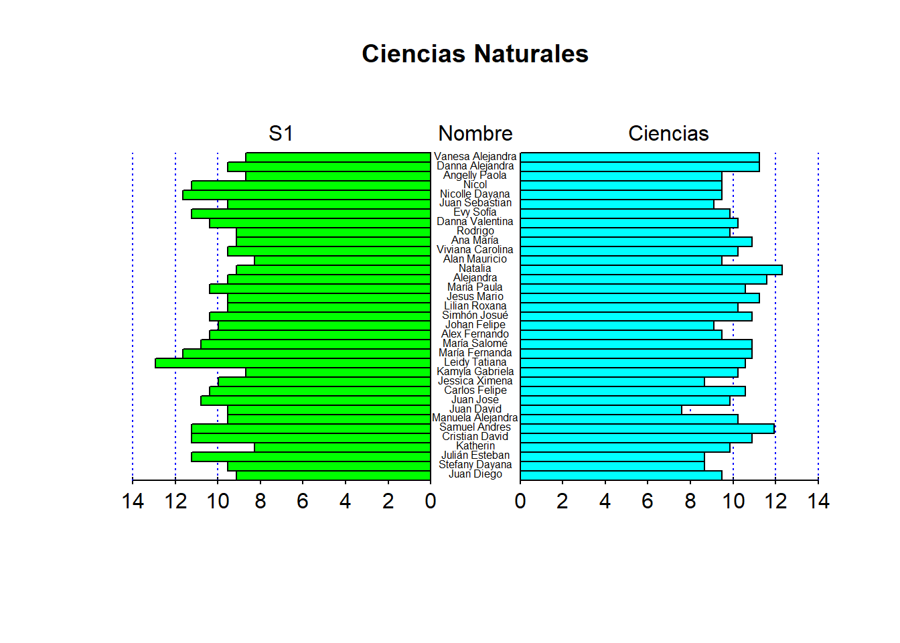
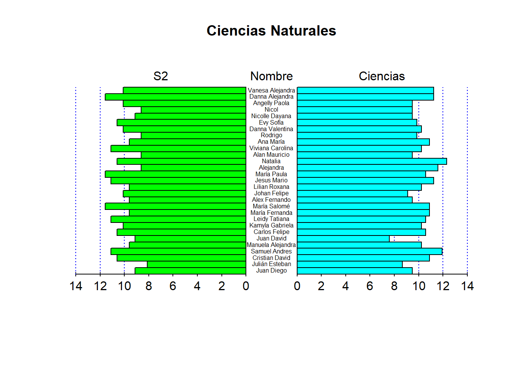
Análisis de Imagen
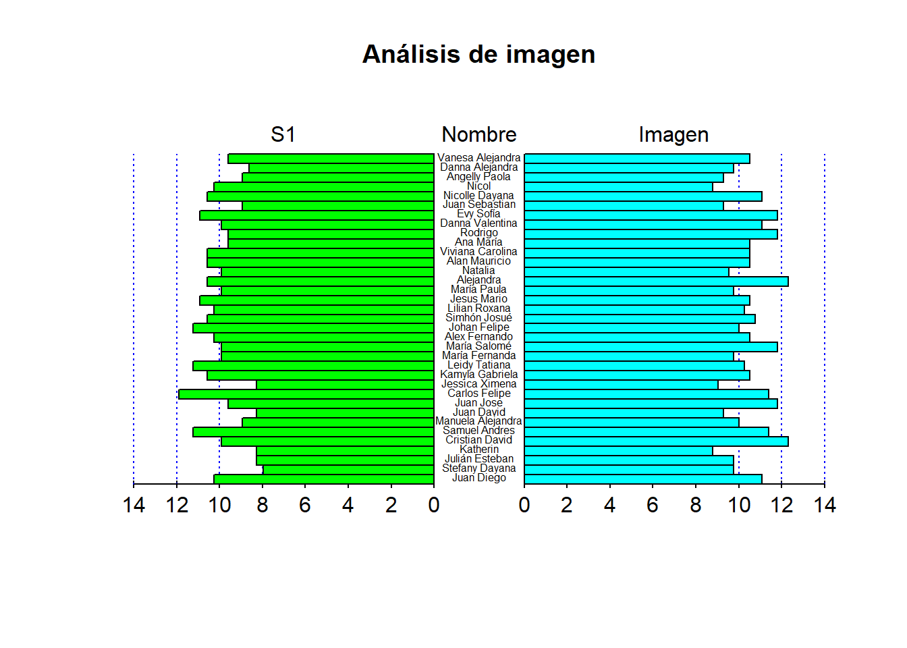
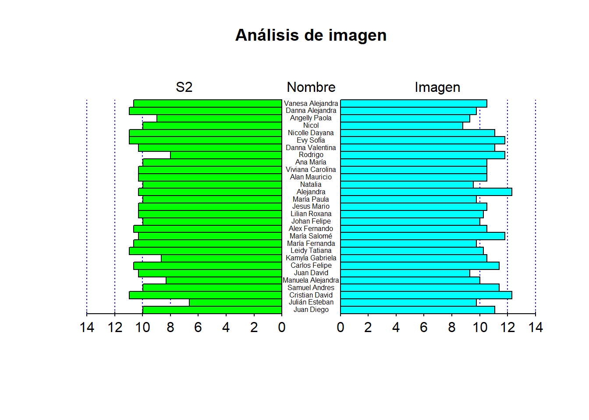